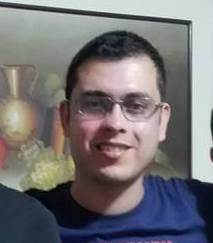

John Leonardo Quiroga

Summary
I'm an electronic engineer with experience in research projects about non-destructive testing techniques
Education
- Electronic Engineering, Universidad Industrial de Santander
- Ms in Electronic Engineering, Universidad Industrial de Santander
- Specialization in Industrial Automation, Universidad Santo Tomás
Work experience
- Assistant Professor, Universidad de Investigación y Desarrollo, 2011-2013
- Associate Professor, Universidad Santo Tomás, 2016-Now
Skills
Electronics 🤖
- Schematic and layout design in EasyEda
- Analog and digital circuits simulation: Orcad Pspice, Proteus, EasyEda
- Design active filters, signal conditioning circuits
Programming 👨🏽💻
Proyects
- (Feb2019-oct2020) Design and implementation of an electronic and mechanical system based on guided waves for the detection and location of internal or external corrosion in metal pipes using the principle of magnetostriction
- (Ago2017-dic2018) Design of a robotic tool for the inspection of discontinuities on the external surface of metal pipes using non-destructive testing (NDE, Nondestructive Evaluation).
- (Feb2014-mar2016) Classification of Elastic Deformation States in Metallic Pipes Using Algorithms Based on Statistical Models and Heuristic Techniques
Others
Contact me
Official Colombian ministry of science CV
Orcid